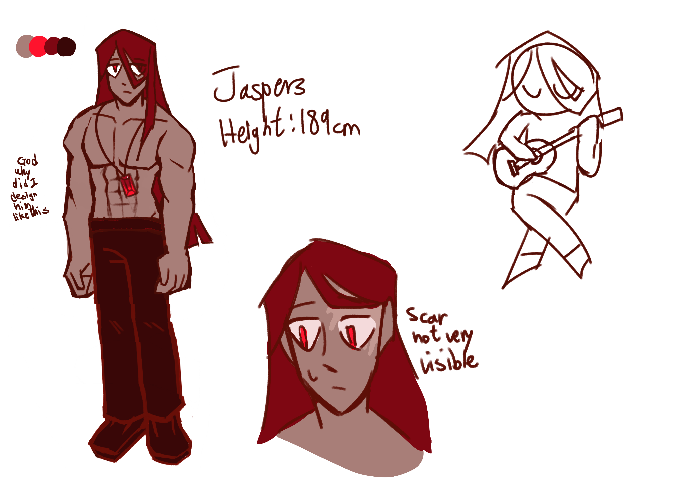

"...Why would you hang out with me?"

"This loner had immense strength, and even able to compete against Solar! Despite his intimidating and large appearance, he was often quite laidback and wouldn't fight anyone, usually. He often spent his time alone, but after a certain incident involving the reckless Solar, he somehow was brought into this small friend group. For he wished to find a direction in life, he joined the journey of discovery, but he would not be prepared for the terror awaiting in the shadows..."
Facts about him
- He is known to be very strong in physique
- His skill was not named due to the lack of information
- He struggled a lot with his emotions, he often pretended to be calm and avoided conflict
- He might not be talkative, but he enjoyed the company of his friends (especially Claire) a lot
- He didn't enjoy fighting that much, due to being forced to training when he was young
- Nobody really knew why he didn't wear shirts, not even he knew
- He was quite bad at smiling, people gets scared when he did that
- In the old concepts, he used to have animal ears and wings like Cosmos, but honestly just one cat-person is enough
- He also used to have some sort of rivalry with Cosmos, well now he doesn't even know her, i guess?
- He used to at least wear a tanktop, but since Cosmos is already wearing one, I decided to take his top off, sorry Jaspers